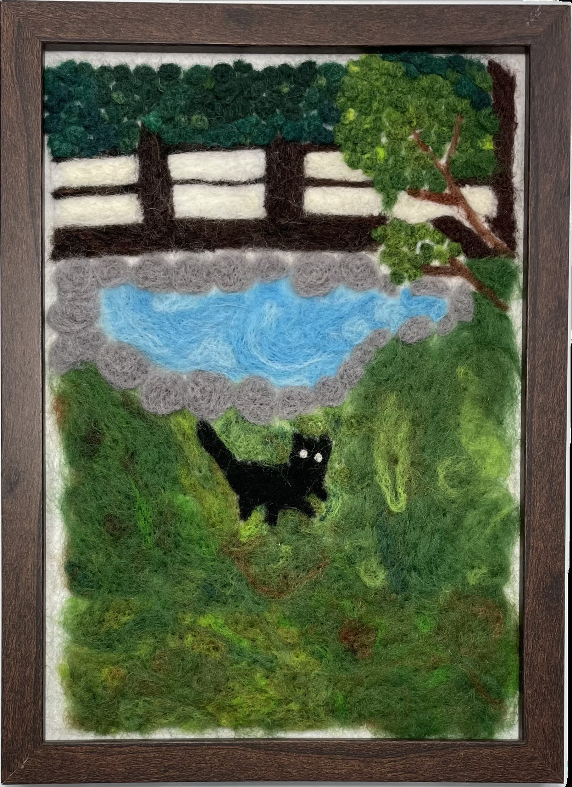

作品名稱：貓和池塘
作者姓名：張庭瑜
作品主題：貓咪追逐蝴蝶但我沒戳蝴蝶
作品敘述：這是我在自主學習課拍攝的照片。照片中，一隻貓正在草地上追逐一隻蝴蝶，我覺得這個畫面非常可愛，於是決定將其捕捉下來，並選擇這一瞬間作為我的羊毛氈作品主題。我運用了混色技巧來調和草地和樹葉的顏色，以增加畫面的深度和層次感。除此之外，我還額外加入了一座池塘，使整個場景更加豐富。
This is a photo I took during my self-directed learning class. In the photo, a cat is chasing a butterfly on the grass, and I thought the scene was so cute that I decided to capture it and chose this moment as the theme for my wool felting project. I used a blending technique to mix the colors for the grass and leaves, adding more depth and layers. In addition to that, I added a pond myself to make the scene look richer.